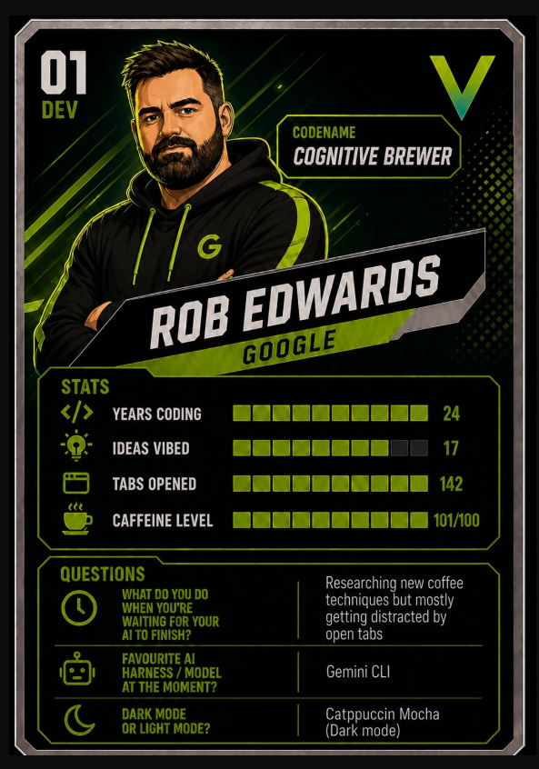
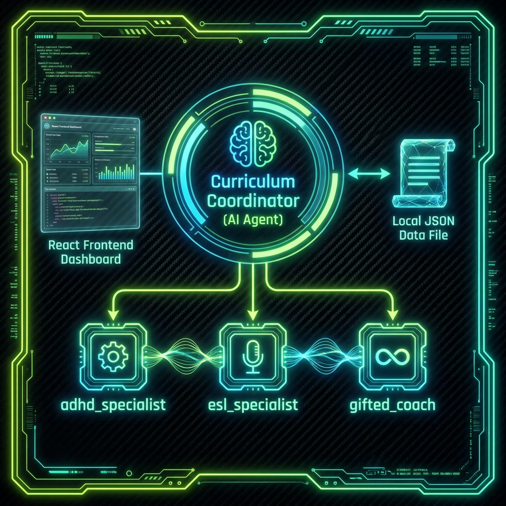

Building a High-Fidelity Education Co-Pilot in 40 Mins with GeminiCLI
A high-fidelity, local-first interactive educational co-pilot. Scaffolded, built, and fully wired live on clean machines using the custom GeminiCLI speed extension.

My enterprise-focused framework, bean-to-cup, was built for robust, complete enterprise agent orchestration and workspace isolation.
But when faced with freshly installed machines and a tight 40-minute demo window, enterprise-grade overhead was a luxury I couldn't afford.
I built a specialized GeminiCLI extension—a ruthlessly streamlined spin-off focused on raw speed.
My extension skills and workflow were designed specifically to drive the agents in the right direction and mitigate distracting crowd noise.
Instead of letting the agent wander, it runs 3 targeted Q&As to surface top use-case friction points and immediately locks down the Critical User Journey (CUJ).
Formulates the database schema (`data.json`) and agent structures strictly around the discovered CUJ. Prevents the agent from getting side-tracked by non-essential features ("crowd noise").
Slices the technical blueprint into completely isolated, modular files (Frontend, Backend, ADK-init) so parallel subagents don't step on each other's toes.
Programmatically spawns parallel, isolated subagents inside separate, visible TMUX panes. Each subagent focuses 100% on implementing its design slice with zero lateral distractions.
The Hackathon featured an audience vote on 3 unique use cases. I aligned my build pipeline to solve Use Case 3: Education Reimagined—supporting diverse student needs in Alberta classrooms.
Ingest benefits or license applications, validate completeness, auto-detect gaps, and route to reviewers.
Act as first responder: classify tickets, automatically resolve routine issues, and compile escalation summaries.
Assess diverse learning needs in crowded Alberta classrooms, personalize student learning, and scale teacher impact.
🚀 CLASSVIBE AI ANSWERED THE CALL: Conceived, scaffolded, built, and fully wired within the 40-minute window using our pipeline.
Coordinator-Specialist Topology: A master orchestrator agent dispatches specialized subagents based on real-time classroom telemetry and student needs.

Curriculum Coordinator orchestrates three dedicated adaptation specialists:
Gamified quest loops (e.g. *Athenian Assembly*):
Home-school pedagogical bridge:
Built strictly with local execution, bypassing internet latency, database provisioning, and security friction during on-stage deployment.
All student profiles (Leo, Amina, Chloe), curriculum plans, quest metrics, and weekly roadmaps are kept inside a single, local, read-write-optimized data/data.json file.
gemini-3.5-flash (Newly announced!) bound using Google AI Studio API key.A key Vibe Games requirement: live, interactive telemetry streamed directly into the dashboard. I engineered compliant ADK logging callbacks to make the agentic processes visible and "alive" for the audience:
Each state mutation outputs real-time feedback with unbuffered stdout logs (`flush=True`) for instant audience tracking.
Absolute Workflow Sovereignty: Preferring terminal-first environments grants complete control to configure code harnesses and scaffoldings in a way that matches rapid dev loops.
Parallel Swarm Execution: Instead of hiding tasks in silent threads, I use TMUX to spawn parallel instances of GeminiCLI in separate, visible panes.
I was incredibly lucky to leverage the brand-new Gemini 3.5 Flash, which was announced just the day before the event. In a 40-minute live build under pressure, model speed is everything.
Terminal & Multiplexing Advantage: Working in the terminal with GeminiCLI and TMUX gave me ultimate control. Running parallel agent instances in spawned TMUX panes kept the build blazing fast and visually engaging for the audience.
Zero-Cloud, Data-First Simplicity: Keeping state in local JSON files (data.json) and using CORS-enabled local FastAPI endpoints avoided cloud DB bottlenecks and network friction entirely.
Optimizing the 40-Minute Sprint:
The complete ClassVibe AI codebase, custom ADK agentic schemas, and CLI extension skills are fully open-sourced on GitHub.